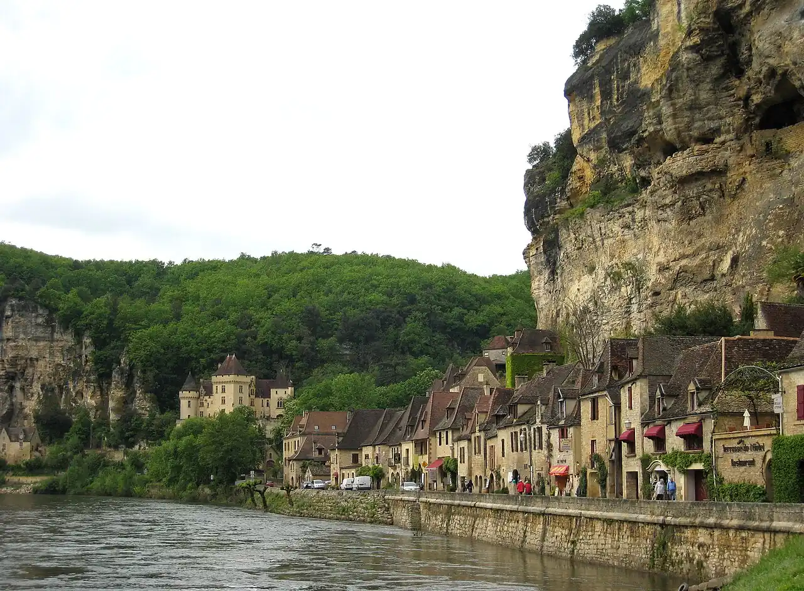

La Roque-Gageac — Dordogne
Dordogne, France · kayak, paddle

Village accroché à une falaise au bord de la Dordogne, classé parmi les Plus Beaux Villages de France. La rivière se descend en canoë, au pied des châteaux de Castelnaud et de Beynac.
- Lieu
- Dordogne, France
- Niveau
- Débutant
- Activités
- kayak, paddle
- Type d'eau
- inland
- Coordonnées
- 44.83, 1.18 (position approximative du secteur)
Dangers à connaître
- Courant plus fort qu’il n’y paraît, surtout après la pluie ou lors des lâchers de barrage en amont.
- Branches et arbres immergés le long des berges.
Le conseil d'Ocean Buddy
Loue un canoë en amont et descends jusqu’au village : c’est depuis l’eau qu’on a la plus belle vue sur ses façades.
Ouvrir dans Ocean Buddy Télécharger sur l'App Store
Source : Fiche Ocean Buddy · septembre 2026 · à vérifier localement.